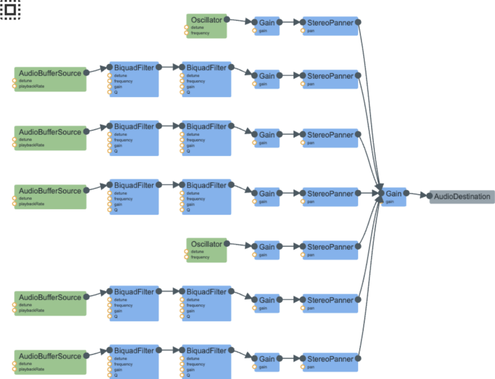

Design Goal
For this sound, I was aiming for the feeling of boots on gravel rather than a single abstract footstep click. What surprised me most while building it was realizing that one footstep is not really one sound at all. It is a sequence of smaller events that happen close together, and the timing between those events is what makes the result believable.
Breaking a Step into Phases
Before working on this patch, I mostly thought of a step as one sound: foot down, sound happens, move on. Farnell’s model pushed me to think about the internal phases of a step instead. In my version, each step is divided into heel, edge, and ball phases. The heel gives the first impact, the edge carries the weight across the surface, and the ball creates the push-off at the end. Once I started spacing those phases more carefully, the patch stopped sounding like a pile of clicks and started sounding more like actual footsteps on gravel.
The synthesis itself is a mix of low-frequency impact and filtered noise. I used short oscillator thumps to give the steps some body and weight, then layered filtered white-noise bursts on top to create the gravel texture. Those two ideas fit together well because the oscillator gives the sense of a boot landing, while the filtered noise gives the sound of loose stones shifting under pressure. In practice, the hardest part was learning how to use the filters well. Small changes in timing or filter ranges could make the sound feel grounded and human, or turn it into something overly clicky and artificial.
How one step is scheduled in code
In code, a single footstep is built in spawnFootstep. It
picks a stereo pan for left or right, then schedules three moments:
heel, edge, and ball. Small random offsets keep consecutive steps from
sounding identical.
const pan = side === "left" ? -0.28 : 0.28;
const heelTime = when + Math.random() * 0.006;
const edgeTime = heelTime + 0.055 + Math.random() * 0.012;
const ballTime = edgeTime + 0.075 + Math.random() * 0.012;
After those times are fixed, the heel phase gets a low thump plus a
short gravel cluster, the edge gets a softer filtered noise burst, and
the ball gets a smaller thump plus a brighter cluster. That is why a
graph or inspector often shows about two oscillators and five noise
sources for one step: two spawnThump calls and five
filtered noise bursts spread across the three phases.
Thump vs gravel texture
The body of the step comes from spawnThump: a sine
oscillator whose frequency drops quickly, with a short attack and decay
on the gain. That reads as weight hitting the ground rather than a
sharp tick.
The gravel comes from spawnFilteredNoiseBurst. It plays a
looping white-noise buffer for a short window, runs it through a
high-pass and a low-pass, envelopes the gain, and pans it.
spawnCrunchCluster fires several of those bursts close
together with slightly different duration, level, and filter settings
so one contact sounds like many little stones.
Keeping the walk going
Continuous walking is not one long synthesizer patch.
playFootsteps mixes everything into a master gain, then
uses a timer to schedule alternating left and right steps. Each tick
calls spawnFootstep slightly ahead of
currentTime so the events land on the audio clock cleanly.
const scheduleStep = () => {
spawnFootstep(activeEvents, {
when: audioCtx.currentTime + 0.03,
side: nextSide,
destination: masterGain,
});
nextSide = nextSide === "left" ? "right" : "left";
};
scheduleStep();
const stepTimer = window.setInterval(scheduleStep, 720);
Every burst and thump is short-lived, so stopping has to tear those
nodes down on purpose. Cleanup clears the interval and stops and
disconnects everything still listed in activeEvents, so
no leftover Web Audio nodes stay connected.

Reading the Graph
The signal flow graph makes that layering very visible. A single step in my patch is made from multiple temporary events, not one permanent signal chain. The oscillator branches represent the low heel and push-off impacts, while the AudioBufferSource branches go through BiquadFilters, GainNodes, and StereoPanners to shape the surface texture. That was one of the biggest insights I got from programming this myself: a convincing footstep depends on several small sounds arriving at the right moments, not just on having the right texture.
Process and Takeaways
My final result sounds pretty close to footsteps on gravel, although I still think it is a little more grainy than real walking and could benefit from more variation in step length and timing. Even so, this project gave me a much better understanding of why procedural audio is useful. Instead of replaying one fixed sample, I can control the rhythm, the balance between impact and crunch, and the relationship between the phases of the step. Building it made the sound of walking feel much more complex than I had assumed at the start.